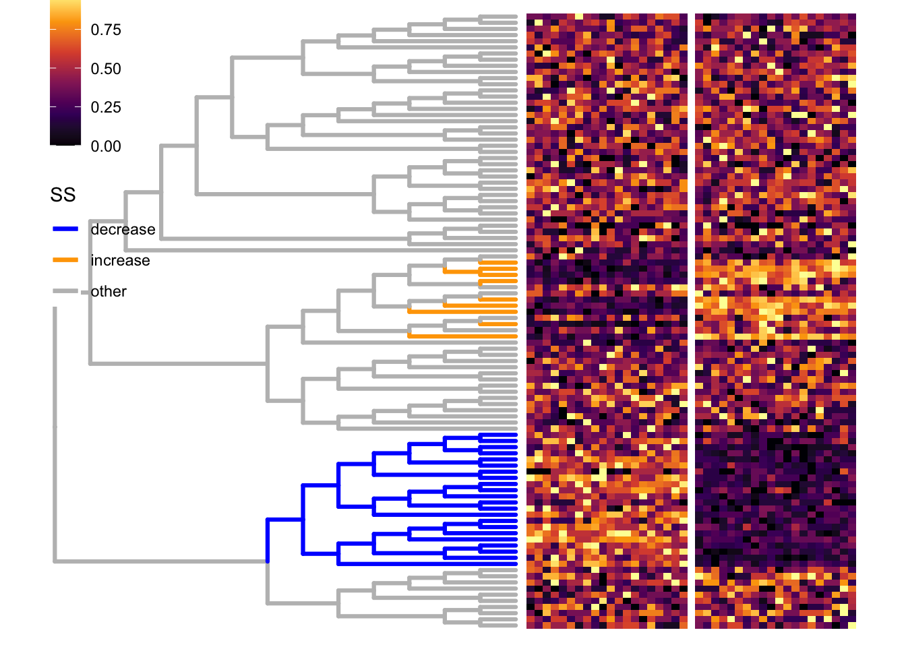
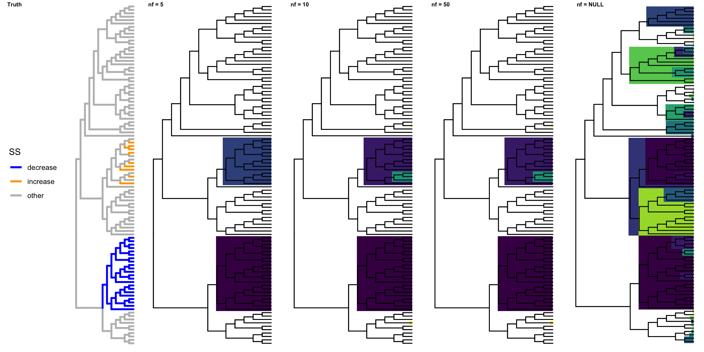
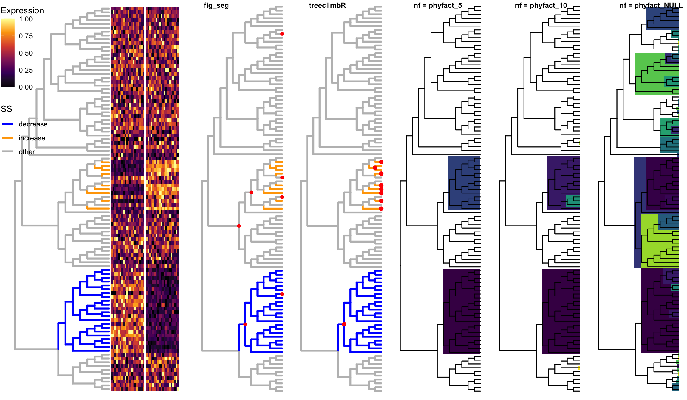

Last updated: 2020-06-12
Checks: 5 2
Knit directory: benchmark_treebased/
This reproducible R Markdown analysis was created with workflowr (version 1.5.0). The Checks tab describes the reproducibility checks that were applied when the results were created. The Past versions tab lists the development history.
The R Markdown file has unstaged changes. To know which version of the R Markdown file created these results, you’ll want to first commit it to the Git repo. If you’re still working on the analysis, you can ignore this warning. When you’re finished, you can run wflow_publish to commit the R Markdown file and build the HTML.
Great job! The global environment was empty. Objects defined in the global environment can affect the analysis in your R Markdown file in unknown ways. For reproduciblity it’s best to always run the code in an empty environment.
The command set.seed(20200610) was run prior to running the code in the R Markdown file. Setting a seed ensures that any results that rely on randomness, e.g. subsampling or permutations, are reproducible.
Great job! Recording the operating system, R version, and package versions is critical for reproducibility.
To ensure reproducibility of the results, delete the cache directory SS_cache and re-run the analysis. To have workflowr automatically delete the cache directory prior to building the file, set delete_cache = TRUE when running wflow_build() or wflow_publish().
Great job! Using relative paths to the files within your workflowr project makes it easier to run your code on other machines.
Great! You are using Git for version control. Tracking code development and connecting the code version to the results is critical for reproducibility. The version displayed above was the version of the Git repository at the time these results were generated.
Note that you need to be careful to ensure that all relevant files for the analysis have been committed to Git prior to generating the results (you can use wflow_publish or wflow_git_commit). workflowr only checks the R Markdown file, but you know if there are other scripts or data files that it depends on. Below is the status of the Git repository when the results were generated:
Ignored files:
Ignored: .Rhistory
Ignored: .Rproj.user/
Ignored: analysis/BS_2_cache/
Ignored: analysis/BS_cache/
Ignored: analysis/SS_cache/
Ignored: analysis/figure/
Untracked files:
Untracked: analysis/1-phylofactor.Rmd
Untracked: analysis/2_phylofactor.Rmd
Untracked: analysis/3_phylofactor.Rmd
Untracked: analysis/4_phylofactor.Rmd
Untracked: analysis/toy_phylofactor.Rmd
Untracked: code/viewSim.R
Untracked: output/viewSim.R
Unstaged changes:
Modified: analysis/SS.Rmd
Modified: analysis/phylofactor.Rmd
Note that any generated files, e.g. HTML, png, CSS, etc., are not included in this status report because it is ok for generated content to have uncommitted changes.
These are the previous versions of the R Markdown and HTML files. If you’ve configured a remote Git repository (see ?wflow_git_remote), click on the hyperlinks in the table below to view them.
| File | Version | Author | Date | Message |
|---|---|---|---|---|
| Rmd | ceba264 | fionarhuang | 2020-06-12 | upload |
suppressPackageStartupMessages({
library(ggplot2)
library(gganimate)
library(ggtree)
library(dplyr)
library(treeclimbR)
library(ape)
library(TreeHeatmap)
library(ggnewscale)
library(cowplot)
library(phylofactor)
library(treeSeg)
})We simulate a scenario (SS) that only some leaves on the tree have differential abundance (signal) between groups. The data is simulated by swapping proportions of two branches. (Leaves in orange are not really a branch. Here, to mention them easily, we say they are in the orange ‘branch’). Leaves in the same signal branch have the same fold change.
# generate a random tree
set.seed(1)
n <- 100
tree <- rtree(n)
# generate a random probility vector for leaves
p <- rbeta(n = n, shape1 = 2, shape2 = 5)
p <- p/sum(p)
names(p) <- tree$tip.label
# # simulate counts by sampling from multinomial distribution
lse <- simMult(pr = p, libSize = 1000, tree = tree,
minTip.A = 10, maxTip.A = 20,
ratio = 1.5, scenario = "SS",
nSam = c(20, 20), pct = 0.6)DA branches are colored in orange or blue. Simulated counts are scaled and displayed in the heatmap
# signal branches
br <- metadata(lse)$branch
source("code/viewSim.R")
treeFig <- viewSim(lse, branch.length = "none",
zoom_scale = 1, size = 1.1)
# scale counts
count <- assays(lse)[[1]]
rownames(count) <- rowLinks(lse)$nodeLab
scale_count <- t(apply(count, 1, FUN = function(x) {
xx <- scale(x)
(xx - min(xx))/(max(xx)-min(xx))
}))
rownames(scale_count) <- rownames(count)
colnames(scale_count) <- colnames(count)
# fig: tree + heatmap
vv <- gsub(pattern = "_.*", "", colnames(count))
names(vv) <- colnames(scale_count)
fig <- TreeHeatmap(tree = tree, tree_fig = treeFig,
hm_data = scale_count,
column_split = vv, rel_width = 0.7,
tree_hm_gap = 0.3) +
scale_fill_viridis_c(option = "B") +
theme(legend.position = c(0.1, 0.8))Scale for 'fill' is already present. Adding another scale for 'fill', which
will replace the existing scale.fig
PhyloFactorsite <- colData(lse)$groupDifferent number of factors are used.
pf_5 <- PhyloFactor(count, tree, site, nfactors= 5)Warning in PhyloFactor(count, tree, site, nfactors = 5): Data has zeros and will
receive default modification of zeros. Zeros will be replaced column wise with
delta*min(x[x>0]), default delta=0.65
1 factor completed in 0.0329 minutes. Estimated time of completion: 2020-06-12 14:54:34
2 factors completed in 0.0622 minutes. Estimated time of completion: 2020-06-12 14:54:33
3 factors completed in 0.0921 minutes. Estimated time of completion: 2020-06-12 14:54:33
4 factors completed in 0.121 minutes. Estimated time of completion: 2020-06-12 14:54:33
5 factors completed in 0.151 minutes. Estimated time of completion: 2020-06-12 14:54:33 f_5 <- pf.tree(pf_5, tree = tree, layout='rectangular',
branch.length = "none",
ignore.tips = FALSE)$ggplotWarning: Ignoring unknown parameters: branch.lengthWarning: Ignoring unknown parameters: branch.lengthpf_10 <- PhyloFactor(count, tree, site, nfactors= 10)Warning in PhyloFactor(count, tree, site, nfactors = 10): Data has zeros and
will receive default modification of zeros. Zeros will be replaced column wise
with delta*min(x[x>0]), default delta=0.65
1 factor completed in 0.0303 minutes. Estimated time of completion: 2020-06-12 14:54:52
2 factors completed in 0.0604 minutes. Estimated time of completion: 2020-06-12 14:54:52
3 factors completed in 0.0904 minutes. Estimated time of completion: 2020-06-12 14:54:52
4 factors completed in 0.12 minutes. Estimated time of completion: 2020-06-12 14:54:52
5 factors completed in 0.149 minutes. Estimated time of completion: 2020-06-12 14:54:51
6 factors completed in 0.18 minutes. Estimated time of completion: 2020-06-12 14:54:52
7 factors completed in 0.211 minutes. Estimated time of completion: 2020-06-12 14:54:52
8 factors completed in 0.243 minutes. Estimated time of completion: 2020-06-12 14:54:52
9 factors completed in 0.272 minutes. Estimated time of completion: 2020-06-12 14:54:52
10 factors completed in 0.302 minutes. Estimated time of completion: 2020-06-12 14:54:52 f_10 <- pf.tree(pf_10, tree = tree,layout='rectangular',
branch.length = "none",
ignore.tips = FALSE)$ggplotWarning: Ignoring unknown parameters: branch.length
Warning: Ignoring unknown parameters: branch.lengthpf_50 <- PhyloFactor(count, tree, site, nfactors= 50)Warning in PhyloFactor(count, tree, site, nfactors = 50): Data has zeros and
will receive default modification of zeros. Zeros will be replaced column wise
with delta*min(x[x>0]), default delta=0.65
1 factor completed in 0.0309 minutes. Estimated time of completion: 2020-06-12 14:56:25
2 factors completed in 0.0594 minutes. Estimated time of completion: 2020-06-12 14:56:21
3 factors completed in 0.0889 minutes. Estimated time of completion: 2020-06-12 14:56:21
4 factors completed in 0.119 minutes. Estimated time of completion: 2020-06-12 14:56:22
5 factors completed in 0.151 minutes. Estimated time of completion: 2020-06-12 14:56:23
6 factors completed in 0.187 minutes. Estimated time of completion: 2020-06-12 14:56:26
7 factors completed in 0.22 minutes. Estimated time of completion: 2020-06-12 14:56:26
8 factors completed in 0.25 minutes. Estimated time of completion: 2020-06-12 14:56:26
9 factors completed in 0.281 minutes. Estimated time of completion: 2020-06-12 14:56:26
10 factors completed in 0.314 minutes. Estimated time of completion: 2020-06-12 14:56:26
11 factors completed in 0.345 minutes. Estimated time of completion: 2020-06-12 14:56:26
12 factors completed in 0.374 minutes. Estimated time of completion: 2020-06-12 14:56:26
13 factors completed in 0.407 minutes. Estimated time of completion: 2020-06-12 14:56:26
14 factors completed in 0.436 minutes. Estimated time of completion: 2020-06-12 14:56:26
15 factors completed in 0.466 minutes. Estimated time of completion: 2020-06-12 14:56:25
16 factors completed in 0.499 minutes. Estimated time of completion: 2020-06-12 14:56:26
17 factors completed in 0.527 minutes. Estimated time of completion: 2020-06-12 14:56:25
18 factors completed in 0.558 minutes. Estimated time of completion: 2020-06-12 14:56:25
19 factors completed in 0.585 minutes. Estimated time of completion: 2020-06-12 14:56:25
20 factors completed in 0.611 minutes. Estimated time of completion: 2020-06-12 14:56:24
21 factors completed in 0.638 minutes. Estimated time of completion: 2020-06-12 14:56:23
22 factors completed in 0.664 minutes. Estimated time of completion: 2020-06-12 14:56:23
23 factors completed in 0.69 minutes. Estimated time of completion: 2020-06-12 14:56:22
24 factors completed in 0.715 minutes. Estimated time of completion: 2020-06-12 14:56:22
25 factors completed in 0.741 minutes. Estimated time of completion: 2020-06-12 14:56:21
26 factors completed in 0.766 minutes. Estimated time of completion: 2020-06-12 14:56:21
27 factors completed in 0.791 minutes. Estimated time of completion: 2020-06-12 14:56:20
28 factors completed in 0.815 minutes. Estimated time of completion: 2020-06-12 14:56:20
29 factors completed in 0.839 minutes. Estimated time of completion: 2020-06-12 14:56:19
30 factors completed in 0.863 minutes. Estimated time of completion: 2020-06-12 14:56:19
31 factors completed in 0.887 minutes. Estimated time of completion: 2020-06-12 14:56:18
32 factors completed in 0.91 minutes. Estimated time of completion: 2020-06-12 14:56:18
33 factors completed in 0.932 minutes. Estimated time of completion: 2020-06-12 14:56:17
34 factors completed in 0.956 minutes. Estimated time of completion: 2020-06-12 14:56:17
35 factors completed in 0.98 minutes. Estimated time of completion: 2020-06-12 14:56:16
36 factors completed in 1 minutes. Estimated time of completion: 2020-06-12 14:56:16
37 factors completed in 1.03 minutes. Estimated time of completion: 2020-06-12 14:56:16
38 factors completed in 1.05 minutes. Estimated time of completion: 2020-06-12 14:56:16
39 factors completed in 1.08 minutes. Estimated time of completion: 2020-06-12 14:56:15
40 factors completed in 1.1 minutes. Estimated time of completion: 2020-06-12 14:56:15
41 factors completed in 1.12 minutes. Estimated time of completion: 2020-06-12 14:56:14
42 factors completed in 1.14 minutes. Estimated time of completion: 2020-06-12 14:56:14
43 factors completed in 1.16 minutes. Estimated time of completion: 2020-06-12 14:56:13
44 factors completed in 1.18 minutes. Estimated time of completion: 2020-06-12 14:56:13
45 factors completed in 1.2 minutes. Estimated time of completion: 2020-06-12 14:56:12
46 factors completed in 1.22 minutes. Estimated time of completion: 2020-06-12 14:56:12
47 factors completed in 1.24 minutes. Estimated time of completion: 2020-06-12 14:56:12
48 factors completed in 1.26 minutes. Estimated time of completion: 2020-06-12 14:56:11
49 factors completed in 1.28 minutes. Estimated time of completion: 2020-06-12 14:56:11
50 factors completed in 1.3 minutes. Estimated time of completion: 2020-06-12 14:56:10 f_50 <- pf.tree(pf_10, tree = tree,layout='rectangular',
branch.length = "none",
ignore.tips = FALSE)$ggplotWarning: Ignoring unknown parameters: branch.length
Warning: Ignoring unknown parameters: branch.lengthpf_NULL <- PhyloFactor(count, tree, site, nfactors= NULL)Warning in PhyloFactor(count, tree, site, nfactors = NULL): Data has zeros and
will receive default modification of zeros. Zeros will be replaced column wise
with delta*min(x[x>0]), default delta=0.65
1 factor completed in 0.0306 minutes. Estimated time of completion: at latest 2020-06-12 14:59:15
2 factors completed in 0.0619 minutes. Estimated time of completion: at latest 2020-06-12 14:59:17
3 factors completed in 0.0909 minutes. Estimated time of completion: at latest 2020-06-12 14:59:13
4 factors completed in 0.12 minutes. Estimated time of completion: at latest 2020-06-12 14:59:11
5 factors completed in 0.15 minutes. Estimated time of completion: at latest 2020-06-12 14:59:11
6 factors completed in 0.179 minutes. Estimated time of completion: at latest 2020-06-12 14:59:10
7 factors completed in 0.208 minutes. Estimated time of completion: at latest 2020-06-12 14:59:09
8 factors completed in 0.237 minutes. Estimated time of completion: at latest 2020-06-12 14:59:09
9 factors completed in 0.266 minutes. Estimated time of completion: at latest 2020-06-12 14:59:08
10 factors completed in 0.294 minutes. Estimated time of completion: at latest 2020-06-12 14:59:08
11 factors completed in 0.322 minutes. Estimated time of completion: at latest 2020-06-12 14:59:06
12 factors completed in 0.351 minutes. Estimated time of completion: at latest 2020-06-12 14:59:06
13 factors completed in 0.378 minutes. Estimated time of completion: at latest 2020-06-12 14:59:06
14 factors completed in 0.407 minutes. Estimated time of completion: at latest 2020-06-12 14:59:05
15 factors completed in 0.432 minutes. Estimated time of completion: at latest 2020-06-12 14:59:04
16 factors completed in 0.459 minutes. Estimated time of completion: at latest 2020-06-12 14:59:03
17 factors completed in 0.486 minutes. Estimated time of completion: at latest 2020-06-12 14:59:03
18 factors completed in 0.514 minutes. Estimated time of completion: at latest 2020-06-12 14:59:02
19 factors completed in 0.539 minutes. Estimated time of completion: at latest 2020-06-12 14:59:01
20 factors completed in 0.568 minutes. Estimated time of completion: at latest 2020-06-12 14:59:01
21 factors completed in 0.593 minutes. Estimated time of completion: at latest 2020-06-12 14:59:00
22 factors completed in 0.62 minutes. Estimated time of completion: at latest 2020-06-12 14:59:00
23 factors completed in 0.645 minutes. Estimated time of completion: at latest 2020-06-12 14:58:59
24 factors completed in 0.67 minutes. Estimated time of completion: at latest 2020-06-12 14:58:58
25 factors completed in 0.695 minutes. Estimated time of completion: at latest 2020-06-12 14:58:58
26 factors completed in 0.721 minutes. Estimated time of completion: at latest 2020-06-12 14:58:57
27 factors completed in 0.746 minutes. Estimated time of completion: at latest 2020-06-12 14:58:57
28 factors completed in 0.769 minutes. Estimated time of completion: at latest 2020-06-12 14:58:56
29 factors completed in 0.794 minutes. Estimated time of completion: at latest 2020-06-12 14:58:55
30 factors completed in 0.817 minutes. Estimated time of completion: at latest 2020-06-12 14:58:54
31 factors completed in 0.839 minutes. Estimated time of completion: at latest 2020-06-12 14:58:53
32 factors completed in 0.864 minutes. Estimated time of completion: at latest 2020-06-12 14:58:53
33 factors completed in 0.886 minutes. Estimated time of completion: at latest 2020-06-12 14:58:52
34 factors completed in 0.908 minutes. Estimated time of completion: at latest 2020-06-12 14:58:51
35 factors completed in 0.931 minutes. Estimated time of completion: at latest 2020-06-12 14:58:51
36 factors completed in 0.953 minutes. Estimated time of completion: at latest 2020-06-12 14:58:50
37 factors completed in 0.977 minutes. Estimated time of completion: at latest 2020-06-12 14:58:49
38 factors completed in 1 minutes. Estimated time of completion: at latest 2020-06-12 14:58:49
39 factors completed in 1.03 minutes. Estimated time of completion: at latest 2020-06-12 14:58:49
40 factors completed in 1.05 minutes. Estimated time of completion: at latest 2020-06-12 14:58:48
41 factors completed in 1.07 minutes. Estimated time of completion: at latest 2020-06-12 14:58:48
42 factors completed in 1.09 minutes. Estimated time of completion: at latest 2020-06-12 14:58:47
43 factors completed in 1.11 minutes. Estimated time of completion: at latest 2020-06-12 14:58:46
44 factors completed in 1.13 minutes. Estimated time of completion: at latest 2020-06-12 14:58:46
45 factors completed in 1.15 minutes. Estimated time of completion: at latest 2020-06-12 14:58:45
46 factors completed in 1.18 minutes. Estimated time of completion: at latest 2020-06-12 14:58:44
47 factors completed in 1.19 minutes. Estimated time of completion: at latest 2020-06-12 14:58:43
48 factors completed in 1.21 minutes. Estimated time of completion: at latest 2020-06-12 14:58:43
49 factors completed in 1.23 minutes. Estimated time of completion: at latest 2020-06-12 14:58:42
50 factors completed in 1.25 minutes. Estimated time of completion: at latest 2020-06-12 14:58:41
51 factors completed in 1.27 minutes. Estimated time of completion: at latest 2020-06-12 14:58:41
52 factors completed in 1.29 minutes. Estimated time of completion: at latest 2020-06-12 14:58:40
53 factors completed in 1.31 minutes. Estimated time of completion: at latest 2020-06-12 14:58:40
54 factors completed in 1.33 minutes. Estimated time of completion: at latest 2020-06-12 14:58:39
55 factors completed in 1.35 minutes. Estimated time of completion: at latest 2020-06-12 14:58:38
56 factors completed in 1.37 minutes. Estimated time of completion: at latest 2020-06-12 14:58:38
57 factors completed in 1.39 minutes. Estimated time of completion: at latest 2020-06-12 14:58:37
58 factors completed in 1.41 minutes. Estimated time of completion: at latest 2020-06-12 14:58:37
59 factors completed in 1.43 minutes. Estimated time of completion: at latest 2020-06-12 14:58:36
60 factors completed in 1.44 minutes. Estimated time of completion: at latest 2020-06-12 14:58:35
61 factors completed in 1.46 minutes. Estimated time of completion: at latest 2020-06-12 14:58:34
62 factors completed in 1.48 minutes. Estimated time of completion: at latest 2020-06-12 14:58:34
63 factors completed in 1.49 minutes. Estimated time of completion: at latest 2020-06-12 14:58:33
64 factors completed in 1.51 minutes. Estimated time of completion: at latest 2020-06-12 14:58:32
65 factors completed in 1.52 minutes. Estimated time of completion: at latest 2020-06-12 14:58:32
66 factors completed in 1.54 minutes. Estimated time of completion: at latest 2020-06-12 14:58:31
67 factors completed in 1.56 minutes. Estimated time of completion: at latest 2020-06-12 14:58:30
68 factors completed in 1.57 minutes. Estimated time of completion: at latest 2020-06-12 14:58:30
69 factors completed in 1.59 minutes. Estimated time of completion: at latest 2020-06-12 14:58:29
70 factors completed in 1.6 minutes. Estimated time of completion: at latest 2020-06-12 14:58:28
71 factors completed in 1.61 minutes. Estimated time of completion: at latest 2020-06-12 14:58:27
72 factors completed in 1.63 minutes. Estimated time of completion: at latest 2020-06-12 14:58:27
73 factors completed in 1.64 minutes. Estimated time of completion: at latest 2020-06-12 14:58:26
74 factors completed in 1.66 minutes. Estimated time of completion: at latest 2020-06-12 14:58:25
75 factors completed in 1.67 minutes. Estimated time of completion: at latest 2020-06-12 14:58:25
76 factors completed in 1.68 minutes. Estimated time of completion: at latest 2020-06-12 14:58:24
77 factors completed in 1.7 minutes. Estimated time of completion: at latest 2020-06-12 14:58:23
78 factors completed in 1.71 minutes. Estimated time of completion: at latest 2020-06-12 14:58:22
79 factors completed in 1.72 minutes. Estimated time of completion: at latest 2020-06-12 14:58:22
80 factors completed in 1.74 minutes. Estimated time of completion: at latest 2020-06-12 14:58:21
81 factors completed in 1.75 minutes. Estimated time of completion: at latest 2020-06-12 14:58:20
82 factors completed in 1.76 minutes. Estimated time of completion: at latest 2020-06-12 14:58:20
83 factors completed in 1.77 minutes. Estimated time of completion: at latest 2020-06-12 14:58:19
84 factors completed in 1.78 minutes. Estimated time of completion: at latest 2020-06-12 14:58:18
85 factors completed in 1.79 minutes. Estimated time of completion: at latest 2020-06-12 14:58:18
86 factors completed in 1.81 minutes. Estimated time of completion: at latest 2020-06-12 14:58:17
87 factors completed in 1.82 minutes. Estimated time of completion: at latest 2020-06-12 14:58:16
88 factors completed in 1.83 minutes. Estimated time of completion: at latest 2020-06-12 14:58:16
89 factors completed in 1.84 minutes. Estimated time of completion: at latest 2020-06-12 14:58:15
90 factors completed in 1.85 minutes. Estimated time of completion: at latest 2020-06-12 14:58:14
91 factors completed in 1.86 minutes. Estimated time of completion: at latest 2020-06-12 14:58:13
92 factors completed in 1.87 minutes. Estimated time of completion: at latest 2020-06-12 14:58:13
93 factors completed in 1.88 minutes. Estimated time of completion: at latest 2020-06-12 14:58:12
94 factors completed in 1.89 minutes. Estimated time of completion: at latest 2020-06-12 14:58:11
95 factors completed in 1.9 minutes. Estimated time of completion: at latest 2020-06-12 14:58:11
96 factors completed in 1.91 minutes. Estimated time of completion: at latest 2020-06-12 14:58:10
97 factors completed in 1.91 minutes. Estimated time of completion: at latest 2020-06-12 14:58:09
98 factors completed in 1.92 minutes. Estimated time of completion: at latest 2020-06-12 14:58:09
99 factors completed in 1.93 minutes. Estimated time of completion: at latest 2020-06-12 14:58:08 f_NULL <- pf.tree(pf_NULL, tree = tree,layout='rectangular',
branch.length = "none",
ignore.tips = FALSE)$ggplotWarning: Ignoring unknown parameters: branch.length
Warning: Ignoring unknown parameters: branch.length# summary(pf_PhyloFactor,factor=1)
# pf_PhyloFactor$factors
Warning: The above code chunk cached its results, but it won’t be re-run if previous chunks it depends on are updated. If you need to use caching, it is highly recommended to also set knitr::opts_chunk$set(autodep = TRUE) at the top of the file (in a chunk that is not cached). Alternatively, you can customize the option dependson for each individual chunk that is cached. Using either autodep or dependson will remove this warning. See the knitr cache options for more details.
plot_grid(treeFig, f_5, f_10, f_50, f_NULL,
nrow = 1,
labels = c("Truth", "nf = 5", "nf = 10", "nf = 50", "nf = NULL"),
label_size = 7)
all_node <- showNode(tree = rowTree(lse), only.leaf = FALSE)
tse <- aggValue(x = lse, rowLevel = all_node)
colData(tse)DataFrame with 40 rows and 1 column
group
<factor>
C1_1 C1
C1_2 C1
C1_3 C1
C1_4 C1
C1_5 C1
... ...
C2_16 C2
C2_17 C2
C2_18 C2
C2_19 C2
C2_20 C2res <- runDA(TSE = tse, feature_on_row = TRUE,
filter_min_count = 0,
design_terms = "group", normalize = FALSE)
out <- nodeResult(object = res, n = Inf)
head(out) node logFC logCPM LR PValue FDR
alias_179 179 -1.3516331 17.35898 1299.1870 1.697869e-284 3.378760e-282
alias_143 143 0.9082591 17.84755 867.8511 9.566389e-191 9.518557e-189
alias_142 142 0.8997545 17.85817 858.6328 9.655929e-189 6.405099e-187
alias_169 169 -0.8440003 17.91916 792.0317 2.914283e-174 1.449856e-172
alias_147 147 0.9457736 17.52817 753.0829 8.571850e-166 3.411596e-164
alias_180 180 -1.3369665 16.58391 731.4019 4.439776e-161 1.472526e-159dim(out)[1] 199 6# treeclimbR
cand <- getCand(tree = rowTree(tse), score_data = out,
node_column = "node", p_column = "PValue",
sign_column = "logFC", message = TRUE)Searching candidates on t = 0 ...Searching candidates on t = 0.01 ...Searching candidates on t = 0.02 ...Searching candidates on t = 0.03 ...Searching candidates on t = 0.04 ...Searching candidates on t = 0.05 ...Searching candidates on t = 0.1 ...Searching candidates on t = 0.15 ...Searching candidates on t = 0.2 ...Searching candidates on t = 0.25 ...Searching candidates on t = 0.3 ...Searching candidates on t = 0.35 ...Searching candidates on t = 0.4 ...Searching candidates on t = 0.45 ...Searching candidates on t = 0.5 ...Searching candidates on t = 0.55 ...Searching candidates on t = 0.6 ...Searching candidates on t = 0.65 ...Searching candidates on t = 0.7 ...Searching candidates on t = 0.75 ...Searching candidates on t = 0.8 ...Searching candidates on t = 0.85 ...Searching candidates on t = 0.9 ...Searching candidates on t = 0.95 ...Searching candidates on t = 1 ...best <- evalCand(tree = rowTree(tse), levels = cand$candidate_list,
score_data = out, node_column = "node",
sign_column = "logFC",
p_column = "PValue")
infoCand(best) t upper_t is_valid method limit_rej level_name best rej_leaf rej_node
1 0.00 0.03636364 TRUE BH 0.05 0 FALSE 30 30
2 0.01 0.15000000 TRUE BH 0.05 0.01 FALSE 30 12
3 0.02 0.15000000 TRUE BH 0.05 0.02 FALSE 30 12
4 0.03 0.15000000 TRUE BH 0.05 0.03 FALSE 30 12
5 0.04 0.15000000 TRUE BH 0.05 0.04 FALSE 30 12
6 0.05 0.15000000 TRUE BH 0.05 0.05 FALSE 30 12
7 0.10 0.15000000 TRUE BH 0.05 0.1 FALSE 30 12
8 0.15 0.24444444 TRUE BH 0.05 0.15 TRUE 31 9
9 0.20 0.24444444 TRUE BH 0.05 0.2 TRUE 31 9
10 0.25 0.24444444 FALSE BH 0.05 0.25 FALSE 31 9
11 0.30 0.24444444 FALSE BH 0.05 0.3 FALSE 31 9
12 0.35 0.24444444 FALSE BH 0.05 0.35 FALSE 31 9
13 0.40 0.24444444 FALSE BH 0.05 0.4 FALSE 31 9
14 0.45 0.24444444 FALSE BH 0.05 0.45 FALSE 31 9
15 0.50 0.24444444 FALSE BH 0.05 0.5 FALSE 31 9
16 0.55 0.24444444 FALSE BH 0.05 0.55 FALSE 31 9
17 0.60 0.24444444 FALSE BH 0.05 0.6 FALSE 31 9
18 0.65 0.24444444 FALSE BH 0.05 0.65 FALSE 31 9
19 0.70 0.24444444 FALSE BH 0.05 0.7 FALSE 31 9
20 0.75 0.24444444 FALSE BH 0.05 0.75 FALSE 31 9
21 0.80 0.24444444 FALSE BH 0.05 0.8 FALSE 31 9
22 0.85 0.24444444 FALSE BH 0.05 0.85 FALSE 31 9
23 0.90 0.24444444 FALSE BH 0.05 0.9 FALSE 31 9
24 0.95 0.24444444 FALSE BH 0.05 0.95 FALSE 31 9
25 1.00 0.24444444 FALSE BH 0.05 1 FALSE 31 9# the detected nodes
loc <- best$output[best$output$signal.node, ][["node"]]
loc[1] 41 44 47 50 51 52 53 179 150fig_climb <- treeFig +
geom_point2(aes(subset = (node %in% loc)), color = "red", size = 2) +
theme(legend.position = "none")As treeSeg requires to specify the distribution of data, and accepts only gauss and binomial, we here transform P-value to Z-score to use gauss.
out_leaf <- out %>%
filter(node %in% 1:100) %>%
arrange(node)
# check order
all(out_leaf$node == 1:100)[1] TRUEpval <- out_leaf$PValue
tp <- 1-pval
# 10E-8 is to avoid Inf value in z that treeSeg doesn't accept
tp <- ifelse(tp == 0, 10E-8, ifelse(tp == 1, 1-10E-8, tp))
z <- qnorm(tp)
names(z) <- transNode(tree = tree, node = out_leaf$node)
ansGauss <- treeSeg(z, tree, alpha = 0.05, fam = "gauss")
ansGauss$mlAN[1] 16 141 179 143 92 42 49fig_seg <- treeFig +
geom_point2(aes(subset = node %in% ansGauss$mlAN),
color = "red")
Warning: The above code chunk cached its results, but it won’t be re-run if previous chunks it depends on are updated. If you need to use caching, it is highly recommended to also set knitr::opts_chunk$set(autodep = TRUE) at the top of the file (in a chunk that is not cached). Alternatively, you can customize the option dependson for each individual chunk that is cached. Using either autodep or dependson will remove this warning. See the knitr cache options for more details.
plot_grid(fig,
fig_seg + theme(legend.position = "none"),
fig_climb, f_5, f_10, f_NULL,
nrow = 1, rel_widths = c(0.28, rep(0.145, 5)),
labels = c("", "fig_seg", "treeclimbR", "nf = phyfact_5",
"nf = phyfact_10", "nf = phyfact_NULL"),
label_size = 9)
sessionInfo()R version 3.6.1 (2019-07-05)
Platform: x86_64-apple-darwin15.6.0 (64-bit)
Running under: macOS Mojave 10.14.4
Matrix products: default
BLAS: /Library/Frameworks/R.framework/Versions/3.6/Resources/lib/libRblas.0.dylib
LAPACK: /Library/Frameworks/R.framework/Versions/3.6/Resources/lib/libRlapack.dylib
locale:
[1] en_US.UTF-8/en_US.UTF-8/en_US.UTF-8/C/en_US.UTF-8/en_US.UTF-8
attached base packages:
[1] parallel stats4 stats graphics grDevices utils datasets
[8] methods base
other attached packages:
[1] treeSeg_0.1 stepR_2.0-4
[3] phylofactor_0.0.1 Matrix_1.2-17
[5] data.table_1.12.6 magrittr_1.5
[7] cowplot_1.0.0 ggnewscale_0.4.0
[9] TreeHeatmap_0.1.0 ape_5.3
[11] treeclimbR_0.1.1 TreeSummarizedExperiment_1.3.0
[13] SingleCellExperiment_1.8.0 SummarizedExperiment_1.16.0
[15] DelayedArray_0.12.0 BiocParallel_1.20.0
[17] matrixStats_0.55.0 Biobase_2.46.0
[19] GenomicRanges_1.38.0 GenomeInfoDb_1.22.0
[21] IRanges_2.20.0 S4Vectors_0.24.0
[23] BiocGenerics_0.32.0 dplyr_0.8.5
[25] ggtree_2.1.6 gganimate_1.0.4
[27] ggplot2_3.3.0
loaded via a namespace (and not attached):
[1] backports_1.1.6 circlize_0.4.8
[3] diffcyt_1.6.1 workflowr_1.5.0
[5] plyr_1.8.5 igraph_1.2.4.1
[7] ConsensusClusterPlus_1.50.0 lazyeval_0.2.2
[9] splines_3.6.1 flowCore_1.52.0
[11] fda_2.4.8 TH.data_1.0-10
[13] digest_0.6.25 htmltools_0.4.0
[15] viridis_0.5.1 fansi_0.4.1
[17] CytoML_1.12.0 cluster_2.1.0
[19] ks_1.11.6 limma_3.42.0
[21] ComplexHeatmap_2.2.0 RcppParallel_4.4.4
[23] R.utils_2.9.0 sandwich_2.5-1
[25] flowWorkspace_3.34.0 prettyunits_1.1.1
[27] colorspace_1.4-1 rrcov_1.4-7
[29] xfun_0.11 crayon_1.3.4
[31] RCurl_1.95-4.12 jsonlite_1.6.1
[33] hexbin_1.28.0 graph_1.64.0
[35] lme4_1.1-21 dirmult_0.1.3-4
[37] survival_2.44-1.1 zoo_1.8-6
[39] glue_1.4.0 flowClust_3.24.0
[41] gtable_0.3.0 zlibbioc_1.32.0
[43] XVector_0.26.0 GetoptLong_0.1.7
[45] ggcyto_1.14.0 IDPmisc_1.1.19
[47] Rgraphviz_2.30.0 shape_1.4.4
[49] DEoptimR_1.0-8 scales_1.1.0
[51] mvtnorm_1.0-11 edgeR_3.28.0
[53] Rcpp_1.0.4 viridisLite_0.3.0
[55] progress_1.2.2 clue_0.3-57
[57] tidytree_0.3.3.991 openCyto_1.24.0
[59] mclust_5.4.5 FlowSOM_1.18.0
[61] tsne_0.1-3 RColorBrewer_1.1-2
[63] ellipsis_0.3.0 pkgconfig_2.0.3
[65] XML_3.98-1.20 R.methodsS3_1.7.1
[67] farver_2.0.3 flowViz_1.50.0
[69] locfit_1.5-9.1 labeling_0.3
[71] reshape2_1.4.3 flowStats_3.44.0
[73] tidyselect_1.0.0 rlang_0.4.5
[75] later_1.0.0 munsell_0.5.0
[77] tools_3.6.1 cli_2.0.2
[79] gifski_0.8.6 evaluate_0.14
[81] stringr_1.4.0 yaml_2.2.0
[83] knitr_1.26 fs_1.3.1
[85] robustbase_0.93-5 purrr_0.3.3
[87] RBGL_1.62.1 nlme_3.1-142
[89] whisker_0.4 R.oo_1.23.0
[91] aplot_0.0.4.991 compiler_3.6.1
[93] png_0.1-7 treeio_1.11.3
[95] tibble_3.0.0 tweenr_1.0.1
[97] pcaPP_1.9-73 stringi_1.4.6
[99] lattice_0.20-38 nloptr_1.2.1
[101] vctrs_0.2.4 pillar_1.4.3
[103] lifecycle_0.2.0 BiocManager_1.30.10
[105] GlobalOptions_0.1.1 bitops_1.0-6
[107] corpcor_1.6.9 httpuv_1.5.2
[109] patchwork_1.0.0 R6_2.4.1
[111] latticeExtra_0.6-28 promises_1.1.0
[113] KernSmooth_2.23-15 gridExtra_2.3
[115] codetools_0.2-16 boot_1.3-23
[117] MASS_7.3-51.4 gtools_3.8.1
[119] assertthat_0.2.1 rprojroot_1.3-2
[121] rjson_0.2.20 withr_2.1.2
[123] mnormt_1.5-5 multcomp_1.4-10
[125] GenomeInfoDbData_1.2.2 hms_0.5.2
[127] ncdfFlow_2.32.0 grid_3.6.1
[129] minqa_1.2.4 tidyr_1.0.2
[131] rmarkdown_1.17 rvcheck_0.1.8
[133] git2r_0.26.1 base64enc_0.1-3
[135] ellipse_0.4.1